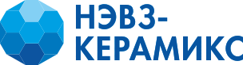
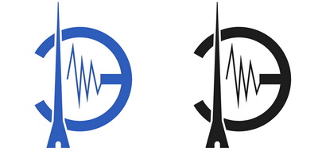
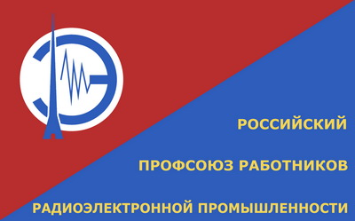
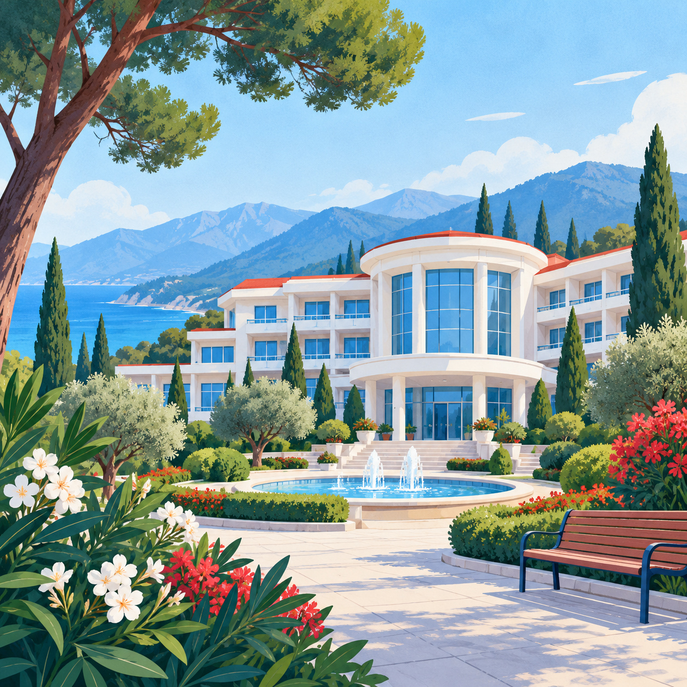
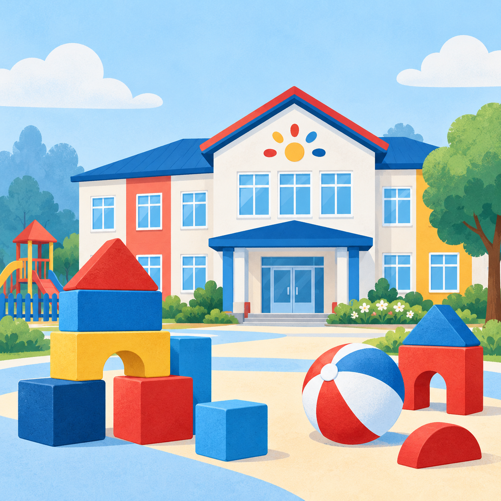
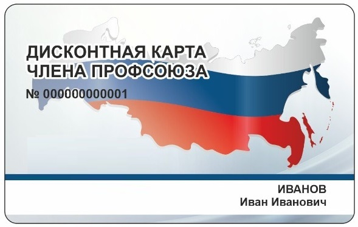
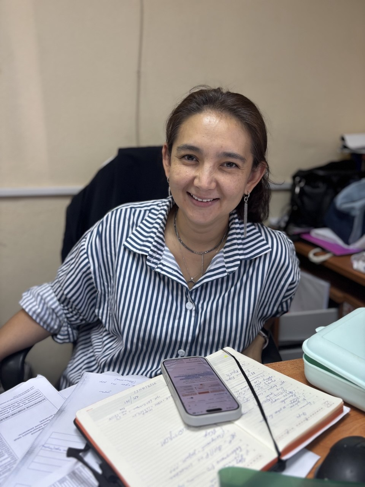

Защита ваших прав
Вопросы оплаты, отпуска, условий и безопасности труда. Поможем разобраться в ситуации и определить дальнейшие шаги.
К кому обратитьсяПЕРВИЧНАЯ ПРОФСОЮЗНАЯ ОРГАНИЗАЦИЯ
На работе и за её пределами. Объединяем коллег, помогаем защищать свои права и делаем жизнь интереснее.



Российский профсоюз работников радиоэлектронной промышленности
Российский профсоюз работников
радиоэлектронной промышленности
ПРОФСОЮЗ РЯДОМ
Профсоюз — это мы, работники предприятия. Вместе обсуждаем то, что волнует, предлагаем решения и отстаиваем общие интересы.
Вопросы оплаты, отпуска, условий и безопасности труда. Поможем разобраться в ситуации и определить дальнейшие шаги.
К кому обратитьсяСвадьба, юбилейная дата, утрата близкого. Подскажем, какие выплаты предусмотрены и какие документы нужны.
Об условиях помощиПрофсоюзный дисконт, совместные поездки, спорт и встречи с коллегами — поводы чаще делать что-то для себя.
О профдисконтной картеЛЬГОТЫ И МАТЕРИАЛЬНАЯ ПОДДЕРЖКА
От первого школьного дня до семейных праздников. Узнайте, какие возможности есть у вас и ваших близких.
Летний отдых для детей
Наличие мест, возраст детей и порядок получения путёвки уточняйте в профкоме.
Уточнить в профкоме
Отдых и оздоровление
По медицинским показаниям, при стаже на предприятии не менее года. Порядок оплаты — по положению о путёвках.
Колдоговор · стр. 13Внимание к важным датам
Поощрение работников по утверждённому положению. Размер и условия уточняйте в профкоме.
Колдоговор · стр. 14
Поддержка семьи
Компенсация родительской платы, но не более 6 000 ₽, по совместному решению администрации и профкома.
Колдоговор · стр. 14Помощь в начале семейной жизни
Разовое пособие работникам предприятия в день бракосочетания — по условиям размещённого колдоговора.
Колдоговор · стр. 14Когда ребёнок идёт в первый класс
Один день по письменному заявлению работника, чтобы проводить ребёнка в школу.
Колдоговор · стр. 15Указаны условия размещённой редакции коллективного договора и информация профкома. Выплаты по разделу VI зависят от финансового состояния предприятия; дополнительные льготы предоставляются при наличии средств. Профком поможет уточнить актуальные условия, необходимые документы и порядок обращения.
БОЛЬШЕ, ЧЕМ РАБОТА
Новые места, азарт команды и маленькие победы. Выбирайте то, что близко именно вам.
Выбраться из привычного маршрута, узнать новое и провести время с коллегами.
Впечатления, которые остаютсяБолеть за своих, пробовать силы и радоваться общим победам.
Проверить эрудицию, посмеяться и увидеть коллег по-новому.
Награждения, признание и общие праздники — чтобы за результатами было видно людей.

ПРОФСОЮЗНЫЙ ДИСКОНТ
Дисконтная карта члена профсоюза даёт доступ к предложениям партнёров: от покупок и услуг до отдыха и спорта.
На сайте программы выберите Новосибирск и проверьте условия конкретного предложения. Порядок получения карты в нашей организации уточняйте в профкоме.
Посмотреть партнёров и скидкиСостав партнёров и условия меняются. Наличие карты не означает скидку на любой товар или услугу.
ЛЮДИ, К КОТОРЫМ МОЖНО ПРИЙТИ
Начните со своего профгрупорга, председателя цехкома или председателя первичной организации.

ПРЕДСЕДАТЕЛЬ ПЕРВИЧНОЙ ОРГАНИЗАЦИИПомогу разобраться, с чего начать, как вступить и к кому обратиться с вашим вопросом.
Написать Рине в MAXВыборный комитет: организует работу первичной организации и рассматривает обращения.
Координируют профсоюзную работу в цехах и подразделениях.
Ближайшие представители в коллективе: помогут со вступлением и передадут ваш вопрос.
Именная структура, подразделения и телефоны появятся после уточнения списка представителей.
ВАШ СЛЕДУЮЩИЙ ШАГ
Скачайте бланк на сайте или получите его у своего профсоюзного представителя.
Распечатайте заявление и внесите необходимые данные. Если есть вопросы — поможем.
Принесите заявление Рине или представителю своего подразделения для оформления вступления.
Членский взнос — 1% от заработной платы. Вступление добровольное. Бланк заявления готовится к размещению.
ДОКУМЕНТЫ
Ознакомьтесь с документом или сохраните его на своё устройство. По вопросам условий и актуальных изменений обращайтесь в профком.
БЕЗ СЛОЖНЫХ СЛОВ
Это добровольное объединение работников для представительства и защиты общих трудовых и социально-экономических интересов. Первичная организация объединяет коллег на нашем предприятии.
Профсоюз — всё объединение его участников. Профком — выбранный ими комитет, который организует текущую работу. Вы вступаете в профсоюз, а с вопросами обращаетесь в профком или к своему представителю.
Чтобы участвовать в решениях, предлагать изменения и поддерживать команду, которая представляет интересы работников. А ещё — быть частью совместной жизни, пользоваться доступными членам профсоюза программами и знать, к кому идти за помощью.
Членский взнос составляет 1% от заработной платы. Порядок перечисления и расходования средств можно уточнить у председателя или представителя своего подразделения.
Нет. Вы выбираете интересные вам события. Условия участия, количество мест и возможная доплата сообщаются для каждого мероприятия отдельно.
Устав доступен на официальном сайте отраслевого профсоюза. Коллективный договор предприятия размещён в разделе «Документы». По вопросам его применения и обновления обратитесь в профком.
Открыть раздел «Документы»